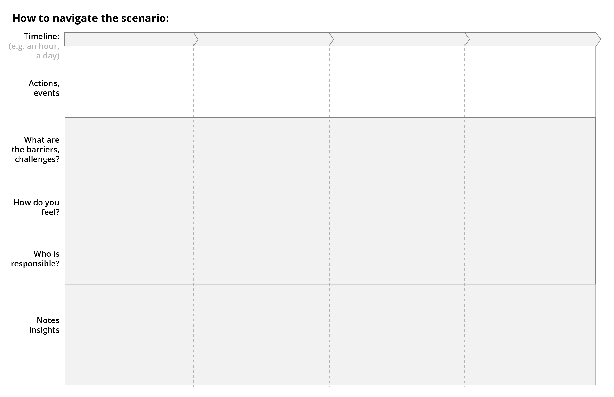
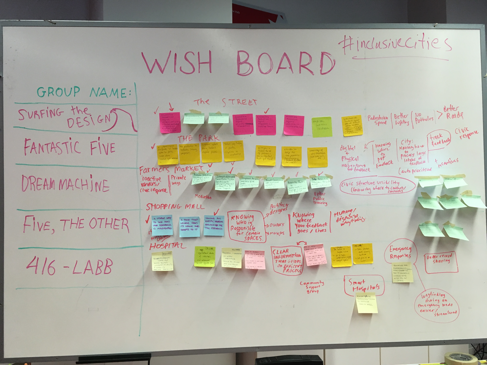
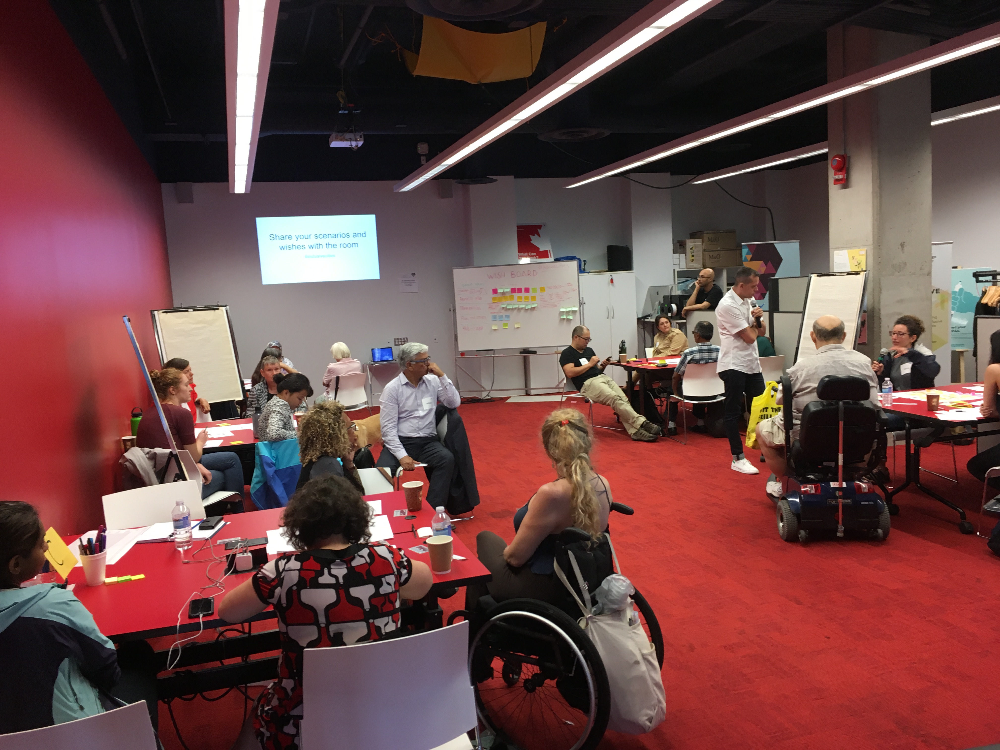

Update October 3, 2018: The }}">Co-design Session #1 Synthesis Report is now available.
The first of three co-design sessions was held on August 8th at 49 McCaul street, Toronto. The session began at 9:30 am and ended around 5:00 pm. Five IDRC members and one accessibility consultant from Sidewalk facilitated a group of 20 people from the Greater Toronto Area participated in this collaborative event. The theme of the first session was about inclusive feedback and engagement. Thus, the planned activities for the day encouraged participants to reflect on their personal experiences with regards to giving feedback in order to identify challenges in the feedback process and find ways to better engage the community.
Objective: encourage active listening
Duration: 15 Minutes
The day began with a warm up activity. In this activity, a story was broken into a series of 17 sentences and phrases each written on a separate slip of paper. The slips of paper were distributed among participants. Each slip was also accompanied with visual icons to assist people in connecting the individual parts back together into a cohesive story. Participants were asked to keep their slips of paper to themselves and only read it out loud to each other. People who didn’t have a slip of paper immediately found a partner or worked as connectors to find the other related pieces of the story. Participants with visual impairment also paired up with other people in the room and actively participated in this activity. In addition to breaking the ice, this activity aimed to initiate conversation about core values of the feedback mechanism: active listening and taking action in response to what you hear.

Objective: Mapping a feedback process from personal perspective
Duration: 1 Hour
After the warm-up activity, each person was assigned to a group. There were a total of 5 teams, with 4 members in each team. Each team was provided with four different contexts from the following list: school, fire/police station, community centre, waterfront, cafe / restaurant, farmers market, quiet place, street festival, your building, park, shopping mall, heritage building, street, city block, neighbourhood, outdoor movie, clinic, hospital, parties, attending an event. Teams were also given a blank card, so they could define their own context. For this activity, teams were asked to pick one context and think about a personal experience where they wanted to give feedback. Once they had selected the scenario they wanted to work with, they were given the following worksheet to map out the process of giving feedback within that context.
On this worksheet, participants were asked to identify the events/actions required to give feedback in their scenario, the challenges and barriers associated with each of those actions/events, their feelings at each step, and people who were responsible/accountable at each phase. By mapping out their feedback journey, we aimed to identify gaps, and find opportunities for improving current feedback mechanisms or creating new tools/processes. All groups were encouraged to take a note of new ideas and wishes they had for new ways to improve feedback tools and processes. Their wishes were posted on a “Wish Board” in the room.
}}">Image description for the Wish Board
Objective: Mapping a feedback process from alternative perspective
Duration: 1 Hour
In the second hour, teams were asked to flip their perspective and think about someone else within that context who is giving or receiving feedback. They were asked to think about people who were not there and perspectives which may have not been discussed yet. Teams completed the same worksheets and created feedback journey maps for this alternative perspective as well. In the last half an hour of the morning session, groups shared their scenarios and their journey maps with the rest of the group. The desired outcomes and wishes for the alternative perspective were also posted on the “Wish Board”.
Objective: Exploring new and different ways of giving feedback
Duration: 1 Hour
In the afternoon session, participants were assigned to new groups. Each group was asked to pick a particular wish from the “Wish Board” and begin brainstorming ideas about how to make that wish a reality. Teams were asked to write down a brief description of their idea at the end of the hour.

The above image represents a prototype developed by one of the teams addressing issues around public transit, specifically targeting configuration of subway lines in the city.
Objective: Considering unrepresented needs
Duration: 30 Minutes
After a quick break, groups were asked to switch the description of their idea with a group next to them, so the other group could critique their proposed solution from the inclusion and accessibility perspective. Each group was provided with the following questions to reflect on their peers work:
Once groups completed their critique, they returned the worksheets to the original groups. Each team had half an hour to review the feedback they received and revise their initial idea.
For the last our, each group shared their work with the rest of the teams and engaged in active discussion and questions when presenting each idea.

At the end of the session, participants were asked to complete a feedback from in order to assess their experience through the day and inform IDRC how they can improve their future co-design sessions.
The results from this session are available in the }}">Co-design Session #1 Synthesis Report.